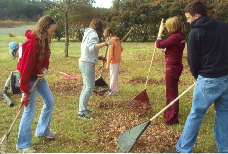

Wesley Chapel is always involved in missions. As a church, we reach out into our community and help with programs such as the School Tools Drive in Stanly County and the Stanly County Christian Ministry Food Pantry. We believe in staying in touch with people in need and demonstrating Christ's love.
Our United Methodist Women and United Methodist Men are constantly helping others both in the community and across the globe. The men have cut wood and given it away to families who couldn't afford to heat their homes or buy wood. The women have sent money to all parts of the world in the hopes that others would come to know Jesus.
Even our youth are mission minded. They raked leaves, cleaned houses and other tasks to raise money just for missions! They also purchased Snuggle Bears to give to people in our community that were in crisis. Our youth want others to know that Jesus loves them.
The church has sponsored mission trips, built Habitat houses, sent youth to camps they would not be able to afford - all in the name of Christ.

Stanly County Christian Ministry